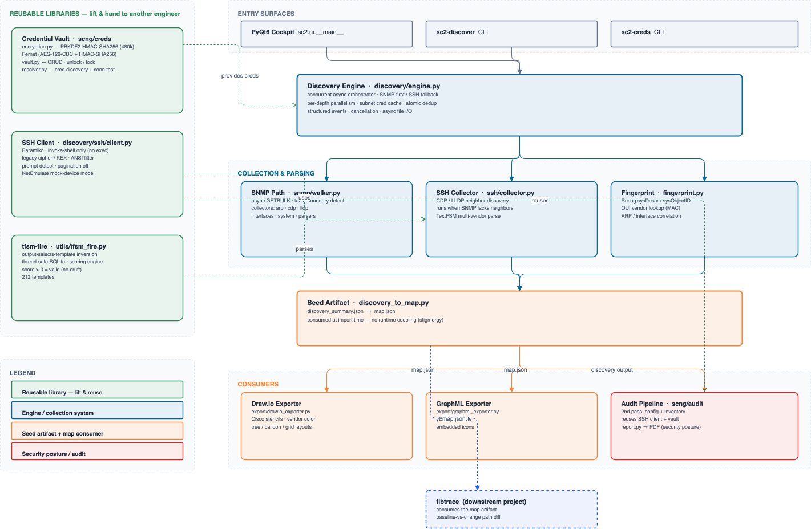

⤢ EnlargePoint it at a seed device and it crawls the network over SSH and SNMP, reading CDP/LLDP neighbors, fingerprinting each device, and emitting a normalized topology map. Downstream, that map becomes Draw.io and GraphML diagrams and a security-posture audit — but the map is written once and consumed at import time, with no runtime coupling between discovery and its consumers.
The architecture is deliberately layered so the hard parts are reusable on their own: a Paramiko SSH client hardened for legacy gear (invoke-shell only, old ciphers and KEX, ANSI filtering, prompt detection), an encrypted credential vault (PBKDF2-HMAC-SHA256 key derivation, Fernet at rest), a resolver that finds working credentials per device, and a parsing engine that selects its own templates — FIG.02.
It's built from libraries you could hand to another engineer tomorrow. The SSH client, the vault, and the parser each stand alone — and the same SSH client is the one powering fibtrace (FIG.03). The topology map is a seed artifact: the file is the contract, so anything can consume it without importing the tool that made it.